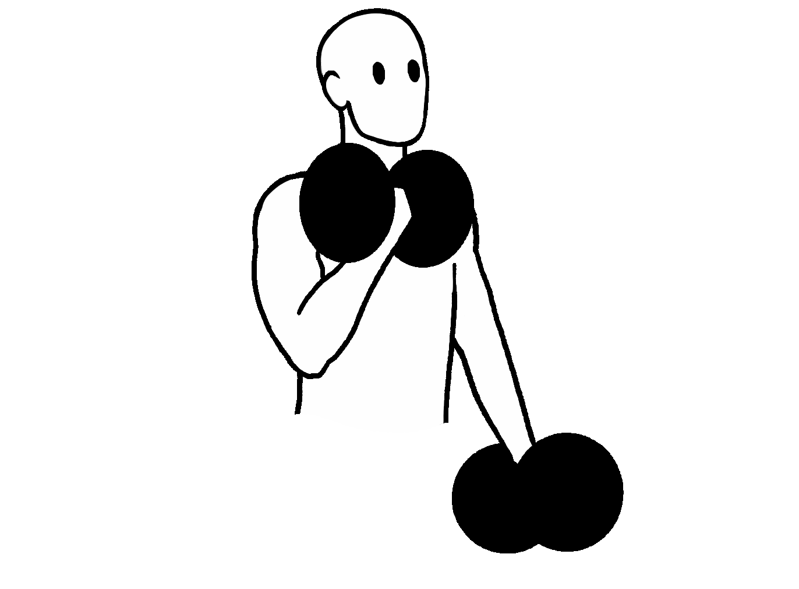

Biceps
The biceps is by far one of the more popular muscle groups out of the whole bunch. It's highly popular when it comes to aesthetics (we've all encountered someone who enjoys flexing their biceps to show off "the gains"), but also has a fair amount of functional use in every day life. Any movement that requires pulling will be highly benefitted by strong biceps muscles.
The bicep is a muscle group composed of the “short head” and “long head”, which work as one in order to achieve all of its primary functions. It's important to have exercises that will work out both of the heads, though i'll be sure to cover that on here.
It's also worth mentioning that most biceps workouts will also target your forearm muscles. The forearms are used whenever you need to grip anything, so the action of gripping heavy objects is sure to work well for most. While I do recommend working out your forearms independently, you should still see growth and strengthening of the forearm muscles through pull exercises.
Bicep Curls
The Bicep Curl is one of those classic arm workouts everyone has seen someone do at some point. It's the typical exercise you see some buff dude in a movie doing while menacingly staring at the main character.
As tough as they might make you look, menacing stares aren't really a part of this workout. The movement is simple enough– square your shoulders to your sides whilst you hold your dumbell. Then, with your bicep facing forward, lift your arm as you rotate your wrist outwards. Make sure you use your arm's full range of motion as it goes up and down. There's about 100 different ways you can do this exercise (both arms at the same time, one arm at a time, both arms alternating), so i'd say do some research based on your own goals in order to see what would fit you the best.
My preffered variation of this exercise is one in which I alternate between my left and right arm until I complete my set. It's less intensive and trains your stamina alongside your strength, which allows your arms to work exhaustively for longer periods of time.
Hammer Curl
The Hammer Curl is more of a variation of the Bicep Curl than anything, but it's so crucial that it's worth mentioning.
It starts off the same as your standard bicep curl: arms to the side as you hold your weight. However, instead of rotating your wrist outwards as your arm goes up, simply hold it vertically. The idea is to train your grip strength alongside your bicep. The Hammer Curl will vastly improve your forearm's strength as you work on your biceps.